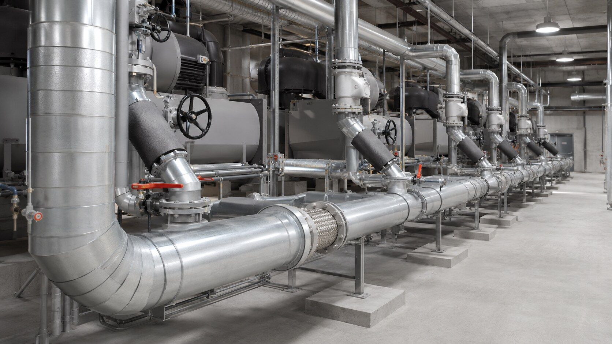
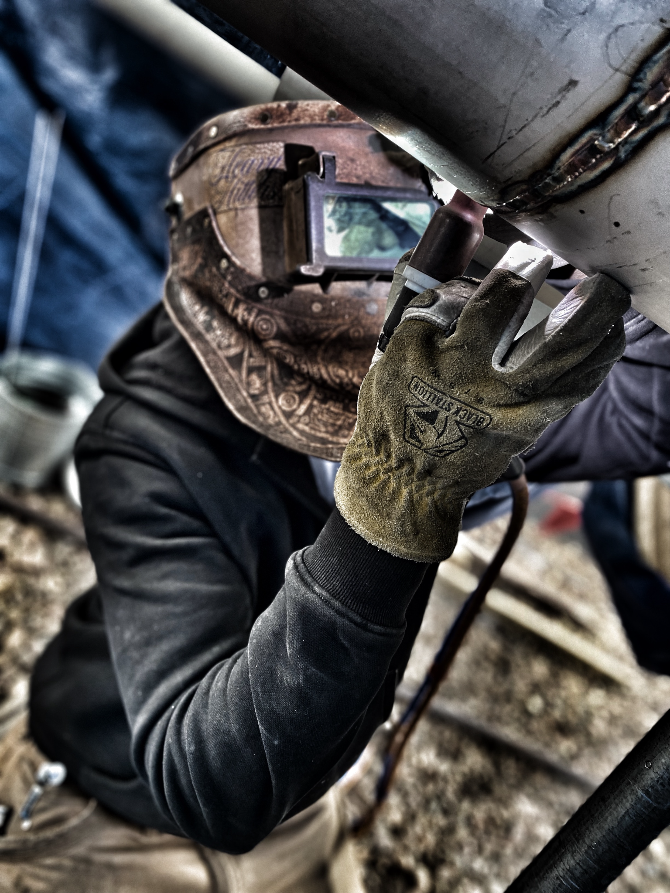
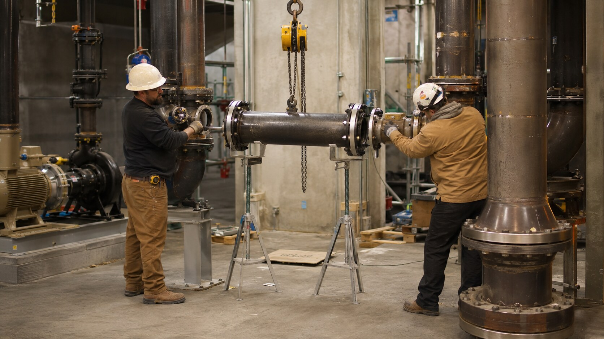

Constructability review
Routing, access, tie-in, support, weld-position, and installation-sequence review before fabrication.
Fabrication / installation / tie-ins
As an industrial process piping contractor, we develop process and inter-equipment piping for efficient fabrication, practical field installation, reliable testing, and maintainable connections throughout the cooling plant.
Discuss your project →
Connected execution
Chilled-water, condenser-water, and cooling-tower piping is where design intent meets field reality. Access, elevations, valve orientation, supports, welding sequence, testing, insulation clearance, and commissioning requirements all converge in the same space.
Our pipe fabrication and installation sequence coordinates spools, equipment connections, supports, valves, and final tie-ins around equipment setting, field access, test boundaries, flushing requirements, and startup readiness.


Piping-side capabilities
Routing, access, tie-in, support, weld-position, and installation-sequence review before fabrication.
Controlled spool fabrication, fit-up, welding, labeling, and shipment planning for efficient field assembly.
Equipment connections, mains, branches, valves, specialties, supports, and final tie-ins.
Chilled water, condenser water, glycol, heat-recovery, and related process-cooling loops.
Material control, weld tracking, inspection coordination, pressure testing, flushing support, and turnover records.
Phased tie-ins, outage planning, prefabricated connection points, and active-facility coordination.
Execution priorities
Spool and joint identification
✓Equipment nozzle coordination
✓Valve and specialty accessibility
✓Pipe support integration
✓Testing and flushing sequence
✓Insulation and service clearance
✓Bring us in early
Bring us the drawings, equipment connection data, routing constraints, test requirements, and installation schedule. We will evaluate the piping package for constructability, fabrication, access, and turnover.
Start the conversation →